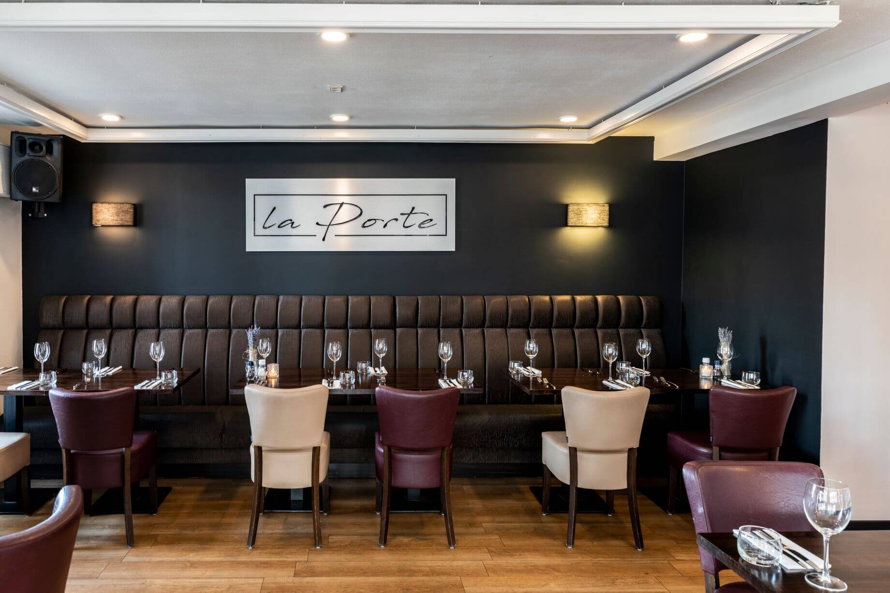
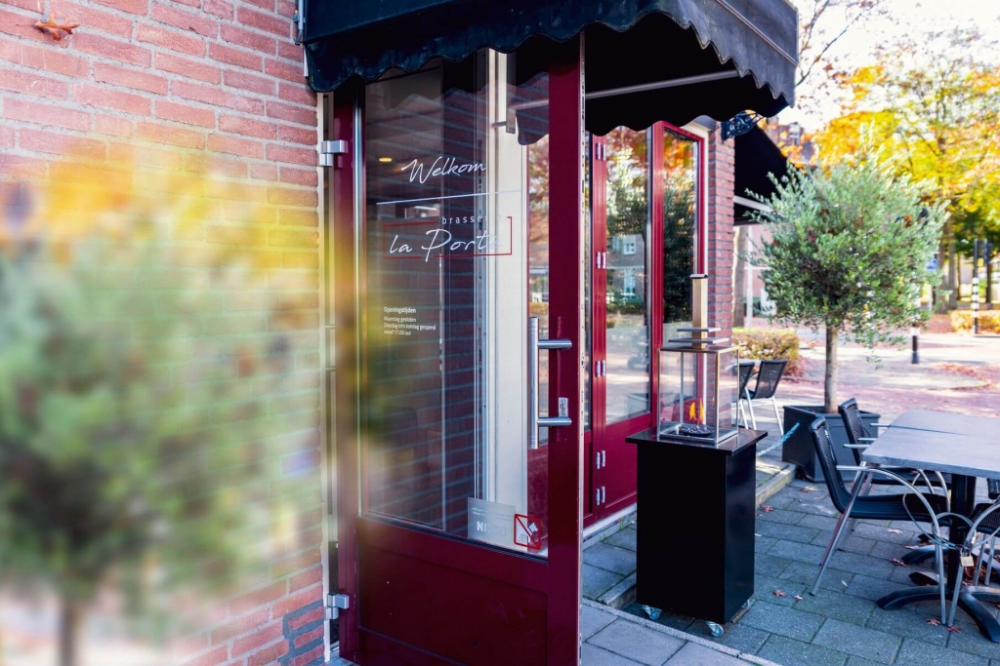
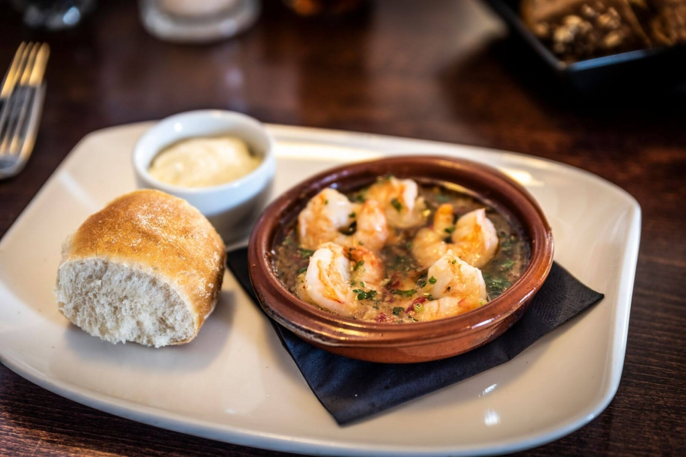
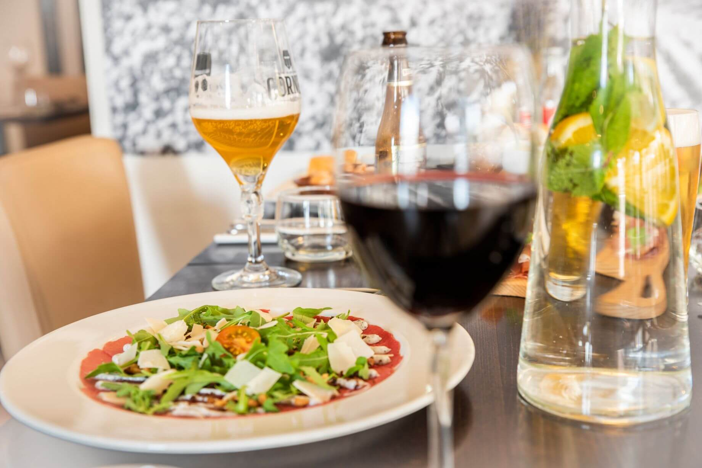
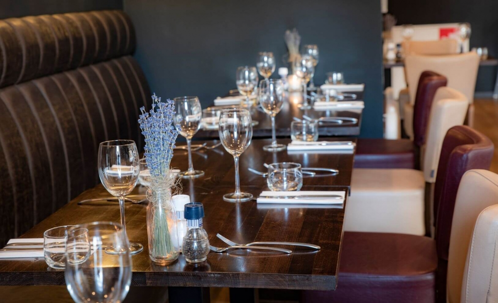
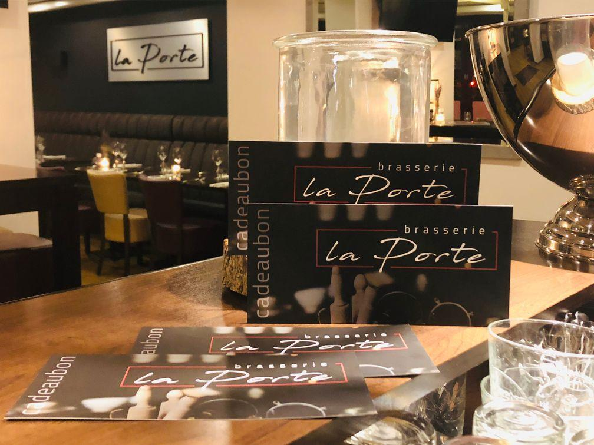

Bourgondisch genieten aan de Maaspoortweg
Frans-Mediterrane gerechten, met passie en liefde bereid door onze chef. Ambachtelijk, met verse ingrediënten, en een prijs/kwaliteitverhouding die centraal staat.
Woensdag t/m zondag geopend vanaf 17.00
Op woensdag en donderdag
3 gangen, 3 tientjes
Een driegangenmenu voor maar € 30. Je kiest uit de gerechten hiernaast.
Voorgerecht
- Carpaccio tartufo
- Gamba's pilpil
- Chicken gyoza
- Paddenstoel & brioche
Hoofdgerecht
- Varkenshaasje klassiek
- Chicken sateetje
- Atlantische tongfilet
- Geroosterde aubergine
Nagerecht
- Café crème brûlée
- Mon Cheri
- Coupe dame blanche
- Affogato

Een smaakbeleving voor iedereen
Brasserie La Porte is een gezellige zaak aan de Maaspoortweg in 's-Hertogenbosch. Je kunt bij ons bourgondisch genieten van overheerlijke Frans-Mediterrane gerechten, die met passie en liefde door onze chef zijn bereid.
Op ambachtelijke wijze bereiden wij onze gerechten met verse ingrediënten. Ontdekken, proeven en genieten: dat is waar het om draait wanneer je bij ons komt eten.
Bon appétit!
Menukaart
Van een bordje fuet bij de borrel tot een tomahawk voor twee. Heb je een dieet of allergie? Geef het aan ons door, dan houden we er rekening mee. Een aantal gerechten kan ook vegetarisch worden besteld; vraag het de bediening.
Om mee te beginnen
Brood met smeersels
1,50 p.p.Aioli | kruidendip
Fuet
5Gedroogd | worst | Catalaans
Schaaltje olijven
4Zwarte en groene olijven | knoflook
Bordje ham
5Spaans gedroogde ham
Brioche maison
6Toast | truffelcrème
Voorgerechten koud
Steak tartaar klassiek
11Runder tartaar | martino | mosterdzaad | rode ui | truffel | brioche
Sushi glaasje
12Verse tonijn | verse zalm | tartaar | avocado | soja | wasabi | sesam | nori
Carpaccio tartufo
11Ossenhaas | parmezaan | rucola | pijnboompitjes | spekjes | truffelmayonaise
Asian beef roll
11Dun gesneden ossenhaas | soja | wakame | wasabi | gebakken uitjes
Paddenstoel & brioche
9Oesterzwam | shiitake | champignon | gekonfijt | truffel | toast
Ham, perzik en gorgonzola
10Gedroogde ham | rucola | balsamico | geroosterde perzik | gorgonzola
La Porte to share
15 p.p.Per 2 personen te bestellen. Laat je verrassen: drie verschillende gerechtjes gecombineerd met één tomatensoepje
Voorgerechten warm
Chicken gyoza
10Oosterse salade | kip | krokant | pickles | soja | wakame
Gamba's pilpil
11Black Tiger gamba's | knoflook | Spaanse peper | peterselie | brood
Mediterrane tomatensoep
6Huisgemaakt | rode ui | groene kruiden
Scampi Español
11Chorizo | gamba's | knoflook | Spaanse peper | bosui | brood
Hongkong calamaris
9Inktvis | knoflook | soja | bosui | zoetzuur | zwarte peper
Garnalenkroketjes en blini's
10Noordzeegarnaal | poffertje | kaviaar | limoen | dille
BBQ chicken
9Gemarineerd | kip | lak | romeinse sla | krokante ui | cress
Boem boem beefpannetje
11Biefstukpuntjes | oosterse wijze | bosui | cassave
Hoofdgerechten vlees
Schnitzel La Porte Chef's special
19250 gram | varken | pepersaus | rodewijnsaus | citroen
Likkie lakkie ribs
21Spare ribs | varken | aioli | chilisaus | maiskolf | 600 gram
Confit de canard
22Langzaam gegaard | eendenbout | rozemarijn | jus
Chicken sateetje
20Malse spies van kip | pindasaus | gefrituurde uitjes | kroepoek
Varkenshaasje klassiek
21Varkenshaas | medaillon | krokant spek | pepersaus
Kip van 't spit
19BBQ | chilisaus | aioli | maiskolf | rauwkost
Het beste van La Porte Vernieuwd
24Spies van kip | spare rib | varkenshaas | biefstuk | gamba | aioli | rodewijnsaus
Tomahawk steak
38 p.p.Per 2 personen te bestellen. Ca. 900 gram gegrilde Ierse rib-eye, geserveerd met peper- en rodewijnsaus en gemengde groenten. Let op: heeft een langere bereidingstijd nodig, zolang de voorraad strekt.
Steakhouse specials
De steakhouse specials worden gesneden van de "kogel" van de bovenbil, afkomstig van Ierse Angus-runderen die vrij rondlopen op groene weides in Ierland. De biefstukken zijn 200 gram en worden bereid zoals je dat van ons gewend bent. De bediening legt het je graag uit!
Peper steak
24Biefstuk Bali
25Garlic butter steak
24Steak surf & turf
25Bistecca gorgonzola
25
Hoofdgerechten vis
Duivelse gamba
20Black Tiger gamba | pikante roomsaus | cassave | bosui
Tongschar en zalm
19Vispannetje | tongschar | zalm | rolletjes | roomsaus | rucola
Kabeljauw en kreeft
20Witvis | filet | kreeftensaus | citroen | selderij
Zalm teriyaki
21Noorse zalm | op de huid gebakken | Japans | wonton | sesam
Atlantisch tongfiletje & gamba
19Tongfilet | Black Tiger gamba | schaaldierensaus | lente-ui
Sole meunière
33400 gram | zeetong | klassiek | op de graat | roomboter | peterselie
Hoofdgerechten vega
Geroosterde aubergine
16Knoflook | rozemarijn | rucola | kaas | balsamico | pesto
Mac & cheese
18Broccoli | macaroni | cheddar | kaas | roomsaus | gegratineerd
Pasta pesto burrata
17Spaghetti | knoflook | groenten | rucola | genovese | mozzarella. Ook te bestellen met kip (+ 6,-)
Maaltijdsalades
Salade carpaccio
19Ossenhaas | parmezaan | rucola | pijnboompitjes | spekjes | truffelmayo
Salade BBQ chicken
18Gemarineerd | kip | romeinse sla | lak | krokante ui | cress
Salade sashimi
21Verse tonijn | verse zalm | tartaar | avocado | soja | wasabi | sesam | nori
Salade gorgonzola en perzik
18Geroosterde perzik | gorgonzola | paddenstoel | walnoot | balsamico | cress
Desserts
Take it (ch)easy
7Roomkaas | zanddeegcrumble | kersengelei
Mon Cheri
6Chocolademousse | kersengelei | slagroom | oreo
Hemels bolletje Chef's special
7Bol van chocolade-ijs | cacaopoeder | hazelnoot. Optioneel met amaretto (+ 4,-)
Appeltartelette
8Appeltaartje | warm geserveerd | vanille-ijs
Hollands kaasplateau
9Vier kaassoorten van eigen bodem | walnoten | balsamico
Crème brûlée
6Klassiek | vanillepudding | gebrande suiker
Sgroppino
8Citroensorbet | prosecco | wodka
Dame blanche
7Vanilleroomijs | chocoladesaus | slagroom
Café crème brûlée
6Keuze uit koffie, thee of cappuccino, geserveerd met een mini crème brûlée
Affogato
6Bol vanille-ijs | espresso. Optioneel met likeur (+ 4,-)
Erbij
Koude of warme sauzen
1Frietje mayo of cajun wedges
3Verse groenten of pasta pilpil
5
Al onze hoofdgerechten worden geserveerd met friet en mayonaise. Wil je er een salade bij? Dat is geen probleem.
De kinderkaart staat niet op het afhaalmenu.
Voorgerechten
Tomatensoepje
3,50Soep van verse tomaat met rode ui en groene kruiden
Groentebouillon
3,50Groentebouillon met groentegarnituur
Carpaccio
7Dungesneden ossenhaas met truffelmayonaise, parmezaan, rucola, pijnboompitjes en uitgebakken spekjes
Knoflookchampignons
4Gegaarde champignons in een knoflookroomsaus met rode ui en bieslook
Gamba pilpil
7Black Tiger garnalen gebakken in knoflook, Spaanse peper en verse peterselie
Hoofdgerechten
Biefstuk
11,50Met frietjes, appelmoes, ketchup en een frisse rauwkostsalade
Kipfilet
9Met frietjes, appelmoes, ketchup en een frisse rauwkostsalade
Witvisje
10,50Met frietjes, appelmoes, ketchup en een frisse rauwkostsalade
Spaghetti tomaat
8Spaghetti met tomatensaus, rucola, rode ui en parmezaan
Frikandel
7Met frietjes, appelmoes, ketchup en een frisse rauwkostsalade
Bitterballen
7Met frietjes, appelmoes, ketchup en een frisse rauwkostsalade
Kaasloempia
7Met frietjes, appelmoes, ketchup en een frisse rauwkostsalade
Toetje
Kinderijsje
5Bolletje vanille-ijs met slagroom en een verrassing
De originele kaarten als pdf: menukaart, kinderkaart en afhaalmenu. Prijzen in euro's.



Afhalen
Van woensdag tot en met zondag kun je bij ons heerlijke afhaalmaaltijden halen. Let op: je kunt uitsluitend bestellen van ons afhaalmenu.
Bekijk het afhaalmenu- Vanaf 15.00Bel je bestelling door via 073-6894040
- 17.00 tot 20.00Haal je bestelling op aan de Maaspoortweg 207
Wat gasten zeggen
Heerlijk gegeten. Bourgondisch eten en porties. Je gaat zeker niet met honger naar huis. Plus leuke bediening! Een aanrader!
Daniel K.
Uitstekend gegeten, vlotte bediening, fijne sfeer. Goede prijs/kwaliteitverhouding. Erg fijn dat er nu een goed restaurant is op de Maaspoort.
bert K.
Nieuw restaurant in de wijk Maaspoort. Aanwinst! Van harte aanbevolen.
Henk B.
Reserveren
Kies de datum, het aantal personen en hoe laat je wilt aanschuiven. Eenvoudig en snel geregeld. Liever even bellen? Dat kan natuurlijk ook.
Iets te vieren?
Ben je met een grote groep of heb je wat te vieren? Vraag ons naar de mogelijkheden.
| Maandag | gesloten |
|---|---|
| Dinsdag | gesloten |
| Woensdag | vanaf 17.00 |
| Donderdag | vanaf 17.00 |
| Vrijdag | vanaf 17.00 |
| Zaterdag | vanaf 17.00 |
| Zondag | vanaf 17.00 |

Dinerbon
Het ideale cadeau voor iedereen die van lekker eten en drinken houdt! Wat is er nou leuker dan een dinerbon geven of ontvangen? Bij Brasserie La Porte laat je een dinerbon uitschrijven voor elk gewenst bedrag.
Je haalt de dinerbon op in ons restaurant aan de Maaspoortweg 207. Bel ons even op 073-6894040, dan leggen we hem alvast voor je klaar. Of kom gewoon even binnenlopen.
Kom jij ons team versterken?
Brasserie La Porte is op zoek naar enthousiaste en representatieve medewerkers die het leuk vinden om onze gasten in de watten te leggen. Heb jij gastvrijheid hoog in het vaandel staan en ben je servicegericht en proactief? Reageer dan snel!
Wij zoeken
- Parttime medewerker bediening, ongeveer 24 uur
- Hulpkrachten bediening
- Afwas- en keukenhulpen
Contact & route
- Adres
- Maaspoortweg 207
5235 KD 's-Hertogenbosch
in de wijk Maaspoort - Parkeren
- Gratis parkeren tegenover de brasserie, bij de Lokerenpassage
- Telefoon
- 073-6894040
- info@brasserielaporte.nl
- Volg ons
- Facebook en Instagram